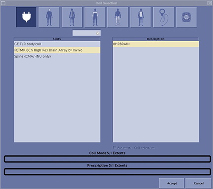
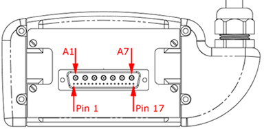
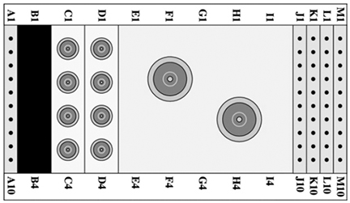

- 00000018WIA3049B030GYZ
- id_123735441.7
- Jul 28, 2025, 9:31:34 PM
PET/MR 8-channel high resolution brain coil troubleshooting
Personnel Requirements
| Required Persons | Procedure |
| 1 | 30 minutes |
Overview
Use the following suggestions to troubleshoot common problems with the 3.0T PET/MR 8-Channel High Resolution Brain Array Coil by Invivo (M8000RA).
Tools and Test Equipment
Digital Volt Meter (DVM)
Procedure
Troubleshooting should only be performed by a General Electric authorized Service Engineer. Make sure the cable for the Brain Coil is securely connected before proceeding.
Mechanical Hardware Check
-
Lift the coil latches on both sides of the coil, and slide the coil to its superior and inferior extents. The coil should slide freely on the base with no binding or grinding.
-
Make sure that the coil does not move on the baseplate when the latches are locked down.
Receiving No Signal
Problem: Unable to pre-scan or scanning, but not receiving a signal.
Possible Solutions:
-
Verify the green light above Port A is illuminated, which indicates the coil is properly plugged into the system.
-
Verify the system correctly detected the ‘PETMR 8Ch High Res Brain Array by Invivo’ by checking that it is selected in the Coils column on the Coils Selection screen shown below.
Figure 1. Currently Connected Coil 
-
Verify the landmark is correct and the cradle did not unlatch.
-
Verify the scan locations and any Field of View (FOV) offsets are correct.
-
Perform a cable continuity check as described in RF Signal Channels Check. This check must be performed by a General Electric (GE) authorized Service Engineer.
-
Verify the coil is positioned with the cable exiting towards the bore and the system and coil polarity match.
-
If still unable to receive a signal, remove the Brain Coil from the magnet bore, and attempt to scan (transmit and receive) using a different coil.
-
If the scan completes successfully, a problem may exist with the Brain Coil.
-
If unable to scan with the substitute coil, there may be a system problem related to this particular coil type.
-
If still not receiving a signal, the problem may be with the PET/MR System.
Contact GE for further assistance.
-
Image Quality
Problem: Poor image quality, shaded images, or the multi-coil quality assurance test fails.
Possible Solutions:
-
Perform a cable continuity check as described in RF Signal Channels Check. This check must be performed by a GE authorized Service Engineer.
-
Verify the Brain Coil is properly positioned.
-
Verify there are no loops in the cables.
-
Verify no metal or ferromagnetic object (such as a safety pin, hair pin, etc.) is close to the coil, patient, or magnet.
-
Verify the center frequency is within the frequency adjustment range for the system.
-
Verify the R1, R2 and TG values from the pre-scan are within normally expected ranges.
-
If not already done, proceed to Brain Coil Setup for MCQA Test.
-
If the values obtained do not fall within normal operating parameters, remove the Brain Coil from the magnet bore, and perform a scan with a different coil.
-
If the scan completes successfully with the substitute coil, acquire a second scan using another Brain Coil of the same type (receive-only, phased array, or transmit/receive) and the system coil selection. If image quality is visibly improved, the problem may be with the Brain Coil.
-
If still having the same issues, a problem may exist with the PET/MR system.
-
If image quality is unimproved, there may be a system problem related to this type of Brain Coil.
Contact GE for further assistance.
-
Artifacts
Problem: A black line or signal void exists on the image.
Possible Solutions:
-
Confirm no metallic objects are located nearby, outside the FOV (especially important on images utilizing fat saturation.
-
If fat saturation is used, verify the Center Frequency fine adjustment was optimized.
Cable Continuity Checks
External Cable
Problem: System will not recognize the coil, or reports MC bias errors with the coil attached.
Possible Solution: Perform cable continuity checks as described below.
RF Signal Channels Check
| Notice | |
|---|---|
-
With the coil cable disconnected, use a DVM to ensure an open circuit condition exists between the designated pin and Ground (GND) for each signal channel.
Figure 2. Coil Cable Connector 
Table 1. Coil Cable Connector Readings Signal Channel Cable Connector System Connection MC-1 A7 GND MC-2 A6 MC-3 A5 MC-4 A4 MC-5 A3 MC-6 A2 MC-7 Pin 2 MC-8 A1 GND NOTE: All outer (A) shells and Pins 1 and 3 are common to GND. -
If one or more readings indicate a short, replace the Brain Coil. If all readings indicate an open circuit condition, proceed to the next section.
PIN Diode Control Channels Check
-
With the coil cable disconnected, use a DVM to determine continuity between the designated pins for each control channel, and verify the control pins are not shorted to GND.
Table 2. External Cable Readings Signal Channel Cable Connector System Connection MC-1 Pin 17 J1 MC-2 Pin 16 J2 MC-3 Pin 15 J3 MC-4 Pin 14 J4 MC-5 Pin 4 J5 MC-6 Pin 5 J6 MC-7 Pin 6 J7 MC-8 Pin 7 J8 GND NOTE: All outer [A] shells and Pins 1 and 3 are common to GND. K1 to K8, M6 -
If one or more readings are >3 ohms, replace the Brain Coil. If all readings are <3 ohms, proceed to the next section.
PIN Diodes Check
-
With the coil cable connected to the Brain Coil, use a DVM to measure the diode drop across the coil connector pins as detailed in the illustration and table below.
Figure 3. System Connector 
Table 3. Pin Diode Readings System Connector Reading Positive Lead Negative Lead J1 — GND [K1] 1.7 GND [K1] J1 — Open J2 — GND [K2] 1.7 GND [K2] J2 — Open J3 — GND [K3] 1.7 GND [K3] J3 — Open J4 — GND [K4] 1.7 GND [K4] J4 — Open J5 — GND [K5] 1.7 GND [K5] J5 — Open J6 — GND [K6] 1.7 GND [K6] J6 — Open J7 — GND [K7] 1.7 GND [K7] J7 — Open J8 — GND [K8] 1.7 GND [K8] J8 — Open -
If one or more readings indicate a short, replace the Brain Coil. If all readings are correct, redo Coil Imaging Performance Verification. If the problem still exists, replace the Brain Coil.
Mechanical Parts Wear
Inspect the Brain Coil and cable for visible signs of wear. If the coil housings do not seat with each other or if the latch mechanism does not work properly, contact GE Service.